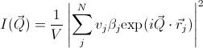
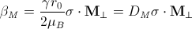
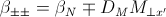
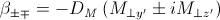
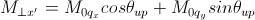
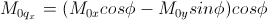
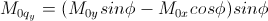
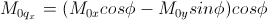
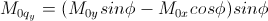
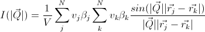

Generic SANS Calculator Tool
Description
This tool attempts to simulate the SANS expected from a specified shape/structure or scattering length density profile. The tool can handle both nuclear and magnetic contributions to the scattering.
Theory
In general, a particle with a volume \(V\) can be described by an ensemble containing \(N\) 3-dimensional rectangular pixels where each pixel is much smaller than \(V\).
Assuming that all the pixel sizes are the same, the elastic scattering intensity from the particle is defined as
Equation 1.
where \(\beta_j\) and \(r_j\) are the scattering length density and the position of the \(j^\text{th}\) pixel respectively.
The total volume \(V\) is equal to
for \(\beta_j \ne 0\) where \(v_j\) is the volume of the \(j^\text{th}\) pixel (or the \(j^\text{th}\) natural atomic volume (= atomic mass / (natural molar density * Avogadro number) for the atomic structures).
\(V\) can be corrected by users (input parameter Total volume). This correction is useful especially for an atomic structure (such as taken from a PDB file) to get the right normalization.
NOTE! :math:`beta_j` displayed in the GUI may be incorrect (input parameter `solvent_SLD`) but this will not affect the scattering computation if the correction of the total volume V is made.
The scattering length density (SLD) of each pixel, where the SLD is uniform, is a combination of the nuclear and magnetic SLDs and depends on the spin states of the neutrons as follows.
Magnetic Scattering
For magnetic scattering, only the magnetization component, \(M_\perp\), perpendicular to the scattering vector \(Q\) contributes to the magnetic scattering length.

The magnetic scattering length density is then
where the gyromagnetic ratio is \(\gamma = -1.913\), \(\mu_B\) is the Bohr magneton, \(r_0\) is the classical radius of electron, and \(\sigma\) is the Pauli spin.
For a polarized neutron, the magnetic scattering is depending on the spin states.
Let us consider that the incident neutrons are polarised both parallel (+) and anti-parallel (-) to the x’ axis (see below). The possible states after scattering from the sample are then
- Non-spin flips: (+ +) and (- -)
- Spin flips: (+ -) and (- +)

Now let us assume that the angles of the Q vector and the spin-axis (x’) to the x-axis are \(\phi\) and \(\theta_\text{up}\) respectively (see above). Then, depending upon the polarization (spin) state of neutrons, the scattering length densities, including the nuclear scattering length density (\(\beta_N\)) are given as
for non-spin-flips
for spin-flips

where

 



Here the \(M_{0x}\), \(M_{0y}\) and \(M_{0z}\) are the \(x\), \(y\) and \(z\) components of the magnetisation vector in the laboratory \(xyz\) frame.
Using the tool
- Load .sld, .txt, or .omf datafile
- Select default shape of sample
- Draw magnetization with arrows (not recommended for a large number of pixels).
- Ratio of (+/total) neutrons after analyser
- Ratio of (+/total) neutrons before sample
- Polarization angle in degrees
- Default volume calculated from the pixel info (or natural density of pdf file)
- Compute the scattering pattern
- Reset GUI to initial state
- Display mean values or enter a new value if enabled
- Save the sld data as sld format
Up_frac_in and Up_frac_out are the ratio
(spin up) / (spin up + spin down)
of neutrons before the sample and at the analyzer, respectively.
NOTE 1. The values of Up_frac_in and Up_frac_out must be in the range 0.0 to 1.0. Both values are 0.5 for unpolarized neutrons.
NOTE 2. This computation is totally based on the pixel (or atomic) data fixed in xyz coordinates. No angular orientational averaging is considered.
NOTE 3. For the nuclear scattering length density, only the real component is taken into account.
Using PDB/OMF or SLD files
The SANS Calculator tool can read some PDB, OMF or SLD files but ignores polarized/magnetic scattering when doing so, thus related parameters such as Up_frac_in, etc, will be ignored.
The calculation for fixed orientation uses Equation 1 above resulting in a 2D output, whereas the scattering calculation averaged over all the orientations uses the Debye equation below providing a 1D output
where \(v_j \beta_j \equiv b_j\) is the scattering length of the \(j^\text{th}\) atom. .. The calculation output is passed to the Data Explorer for further use.
- PDB file loaded
- disabled input for Up_frac_in, Up_frac_oupt, Up_theta
- option to perform the calculations using “Fixed orientations” (2D output) or “Averaging over all orientations using Debye equation” (1D output). This choice is only available for PDB files.
Note
This help document was last changed by Steve King, 01May2015